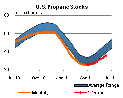

Released: June 15, 2011
Next Release: June 22, 2011
How the upcoming hurricane season might impact Gulf of Mexico crude oil production
Hurricanes and tropical storms in the Gulf of Mexico can severely disrupt the supply of crude oil and natural gas from offshore platforms to onshore processing facilities. Predicting the formation of hurricanes and tropical storms is an uncertain science, and most forecasters speak in terms of probabilities or ranges. The National Oceanic and Atmospheric Administration (NOAA) released its Atlantic Hurricane Season Outlook on May 19, 2011, indicating that the Atlantic basin will likely experience above-normal tropical weather activity during the upcoming hurricane season (June 1 - November 30). NOAA projects 12 to 18 named storms will form within the Atlantic basin over the next six months, including 6 to 10 hurricanes, of which 3 to 6 will be intense.
When severe tropical weather threatens the Gulf of Mexico region, it is difficult to predict the effects on crude oil production. The level of shut-in production depends on a number of factors, including the overall intensity of severe weather, the specific track of each storm, and producers' response to the threat. Production outages have varied greatly over the last few years (see Figure 1). Although hurricane activity within the entire Atlantic Basin was higher than normal during 2010, only two minor storms impacted the Gulf producing region, shutting in 4.3 million barrels of crude oil (about 2 percent of normal production). In contrast, Hurricanes Gustav and Ike shut in over 60 million barrels of crude oil during 2008 (about 25 percent of normal production).
In a supplement to the June edition of the Short-Term Energy Outlook ( 2011 Outlook for Hurricane-Related Production Outages in the Gulf of Mexico), EIA simulated the probability distribution for seasonal shut-in crude oil production in the Gulf of Mexico using information from NOAA's most recent hurricane projections. The simulated median cumulative volume of shut-in production over the course of the entire upcoming hurricane season was 19 million barrels, three times the estimated median cumulative outage during a season with normal hurricane activity. However, projections of shut-in production are highly uncertain. For example, there is a 70-percent probability that shut-in offshore production for the entire season will fall between 3.2 and 53.5 million barrels of crude oil. Intervals with a higher likelihood of encompassing the actual level of shut-in production would be even wider. Even with NOAA's projection of above-normal hurricane activity this year, the likelihood of experiencing a season similar to 2008 is only 11 percent.
Gasoline prices down for the fifth straight week while diesel prices move higher
The U.S. average retail price of regular gasoline fell for the fifth consecutive week, dropping almost seven cents to hit $3.71 per gallon. The average price is $1.01 per gallon higher than last year at this time. The biggest decrease came in the Midwest, where prices plunged more than 13 cents on the week. Other regions saw more temperate decreases. The East Coast and West Coast both saw average gasoline prices drop more than four cents from last week. In the Rocky Mountain region, prices were down almost three cents, while the Gulf Coast registered a two-cent decrease in gasoline prices.
The national average on-highway diesel price increased for the first time in six weeks, adding more than a penny to reach $3.95 per gallon. The diesel price is $1.03 per gallon higher than last year at this time. All of the major regions, except for the Rocky Mountains, saw average diesel prices increase between one and two cents. The Rocky Mountains were the only region to see diesel prices drop this week, as prices there fell almost three cents. The West Coast, with an average price of $4.16 per gallon, is only major region where prices remain over $4 per gallon. The least expensive diesel prices are found on the Gulf Coast, where a gallon sells for $3.90, on average.
Propane inventories on the rise
Total U.S. propane stocks continued to build last week, adding 1.1 million barrels to end at 35.7 million barrels. The largest build was seen in the Midwest region, with 0.6 million barrels of new propane inventory. The Gulf Coast region grew by 0.3 million barrels, while the East Coast and Rocky Mountain/West Coast regions each added about 0.1 million barrels of propane. Propylene non-fuel use inventories represented 6.7 percent of total propane inventories.
Text from the previous editions of This Week In Petroleum is accessible through a link at the top right-hand corner of this page.
 |
|||||||
| Retail Data | Changes From | Retail Data | Changes From | ||||
| 06/13/11 | Week | Year | 06/13/11 | Week | Year | ||
| Gasoline | 3.713 | Diesel Fuel | 3.954 | ||||
 |
|||||||||||||||||||||||||||
|
|||||||||||||||||||||||||||
| *Note: Crude Oil Price in Dollars per Barrel. | |||||||||||||||||||||||||||
|  | |||||||
| Stocks Data | Changes From | Stocks Data | Changes From | ||||
| 06/10/11 | Week | Year | 06/10/11 | Week | Year | ||
| Crude Oil | 365.6 | Distillate | 140.8 | ||||
| Gasoline | 215.1 | Propane | 35.699 | ||||